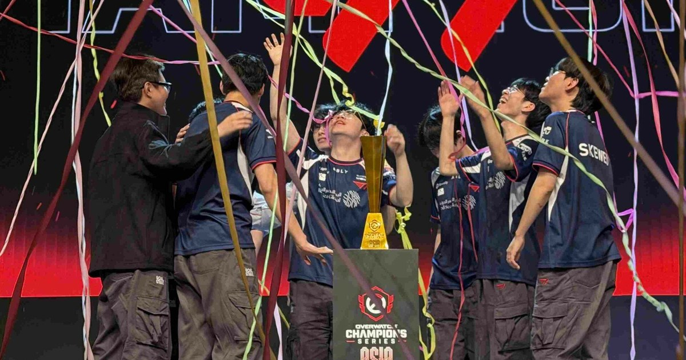

T1 win the OWCS Asia Finals 4-1 — back-to-back titles and the No. 1 seed for the World Finals
T1 beat Crazy Raccoon 4-1 in the OWCS Asia Finals grand final in Busan, winning their first Asia title two weeks after their first Korea title — and locking in the No. 1 Asian seed for the World Finals in Guangzhou, December 2–6.

Disclosure: this post contains affiliate links. I earn a commission on qualifying purchases.
T1 are the champions of Asia. The Korean squad beat Crazy Raccoon 4-1 in the grand final of the 2026 Overwatch Champions Series (OWCS) Asia Finals on Sunday, November 22, at the BEXCO Auditorium in Busan — winning their first OWCS Asia title and going back-to-back with the OWCS Korea Stage 3 championship they won two weeks earlier.
The final was played in front of a live crowd at G-STAR 2026, the Korean game show, and T1 controlled it from the start. They took the first two maps, Samoa and Neon Junction, before Crazy Raccoon answered on New Junk City. T1 closed it out on Colosseo and then Shambali Monastery, with Crazy Raccoon scraping only a single map in an otherwise dominant effort.
The road to the final
Six teams played the Asia Finals from November 20 to 22: four from Korea — T1, ZETA DIVISION, Crazy Raccoon, and Team Falcons — plus Japan's VARREL and the Pacific's The Gatos Guapos. T1 opened with a 3-0 win over VARREL, then beat ZETA DIVISION 3-1 in the semifinals on Saturday. Crazy Raccoon swept Team Falcons 3-0 in the other semifinal, setting up a rematch of a Korea Stage 3 playoff series the two teams had already fought to the wire.
Kim "DONGHAK" Min-sung and Kim "ZEST" Hyun-woo were singled out as T1's standouts in the final. There were no asterisks this time, either: T1's Korea Stage 3 win had come with question marks over the absence of the hero Doctrine due to a bug. In Busan, T1 simply proved they are in their zone in this meta, with Reaper and Echo dominating the DPS slots and Junker Queen anchoring the tank role across the tournament.
What it means for Guangzhou
The Asia Finals also settled Asia's four seeds for the OWCS World Finals, which run December 2 to 6 in Guangzhou, China. T1, who had already qualified by winning Korea Stage 3, take the No. 1 seed. Crazy Raccoon enter as the No. 2 seed. ZETA DIVISION beat Team Falcons 4-2 in the third-place match to take the No. 3 seed, and VARREL — who edged The Gatos Guapos 3-2 in a fifth-place decider — take the last ticket as the No. 4 seed.
The winner took $25,000 from the $40,000 prize pool. All 12 World Finals teams are now confirmed: T1, Crazy Raccoon, and ZETA DIVISION from Korea; Twisted Minds, Team Peps, and 1234 from EMEA; Dallas Fuel, Team Liquid, and Spacestation Gaming from North America; Weibo Gaming and All Gamers from China; and VARREL from Japan. Twisted Minds arrive as defending champions, chasing back-to-back world titles after winning the 2025 World Finals in Stockholm.
T1 head coach Hee-won "Rush" Yoon kept the focus forward. "The players gained confidence from winning Korea Stage 3, and I am glad we maintained that momentum to win the Asia Finals," he said. "We will showcase great performance at the World Finals as well and bring home the championship."
Two titles in two weeks, a No. 1 seed, and a coach already talking about bringing the championship home. T1 go to Guangzhou as Asia's team to beat.
Sources: T1 Wins OWCS Asia Finals 4-1 (Inven Global) · OWCS Asia Stage 3 results and World Finals qualifiers (OWTV) · OWCS Asia Finals 2026: Results From Busan (Esport Agenda)
Gear up: Razer — mice, keyboards, headsets and laptops.